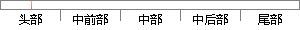

定位体制比较灵活，可以使用多种不同的测量参数，不同的观测量之间进行组合可以形成多种不同的定位方法；
片段位置图

相似结果|
1
原句片段：定位体制比较灵活，可以使用多种不同的测量参数，不同的观测量之间进行组合可以形成多种不同的定位方法；
相似片段 1：基站定位、惯导定位等多种技术集成形成一套室内...不同的室内定位方法选择不同的观测量,通过不同...RSSI测量是通过计算信号的传播损耗,可以使用理论或者...
|
※ 片段修改建议 ※
近似词参考：- 体制：体系体例
- 比较：比力 对照 对比
- 灵活：矫捷 灵动 天真 机动 灵便
- 使用：利用
- 不同：分歧 差别
- 测量：丈量
- 不同：分歧 差别
- 观测：观察
- 测量：丈量
- 进行：举行
- 形成：构成
- 不同：分歧 差别
- 方法：方式 要领 法子
系统自动生成语句：定位体系体例比力矫捷，可以利用多种分歧的丈量参数，分歧的观丈量之间举行组合可以构成多种分歧的定位方式；
注：本片段修改建议为系统自动生成，仅供参考。